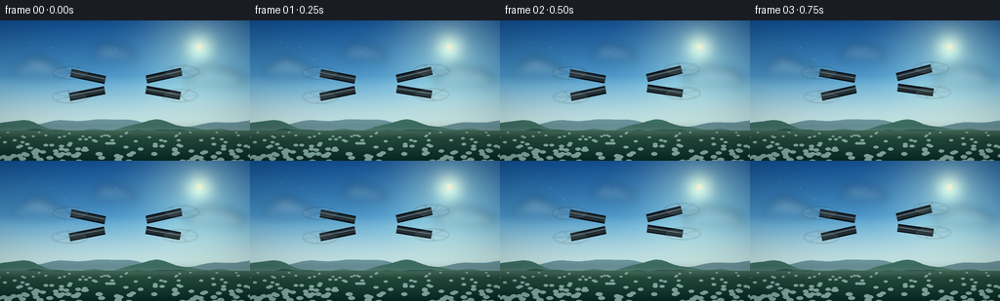
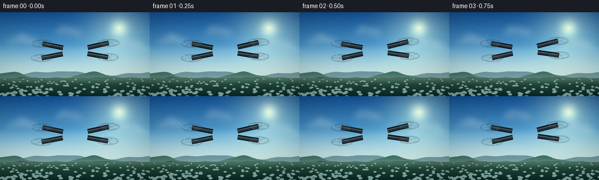
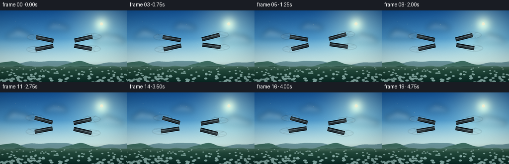
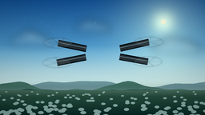
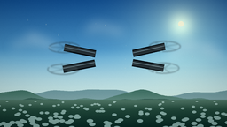
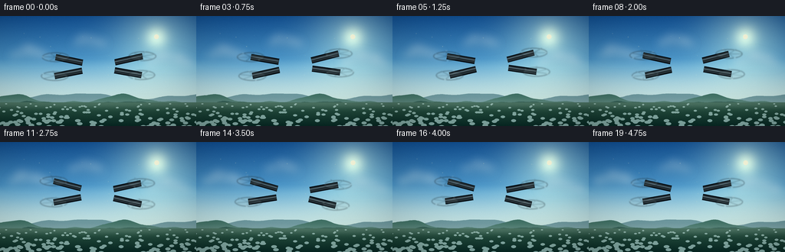

CODING AGENTS AS PIXEL WORLD MODELS
traex/DeepSeek-V4.1-Flash · instance_preservation_0040
点击播放 · 原生 RGB 像素
逐轮保存的候选
回放视频、检查图与代码变化。
每份候选均可单独播放。实际图片检查记录在下方工具轨迹中。
候选 01播放与检查图
点击播放 · 原生 RGB 像素


展开代码变化
--- 上一保存版本
+++ 本次保存版本
@@ -0,0 +1,565 @@
+from __future__ import annotations
+
+import math
+from pathlib import Path
+
+import numpy as np
+from PIL import Image, ImageDraw, ImageFilter
+
+import artifact_io
+
+
+WIDTH = 256
+HEIGHT = 144
+FRAME_COUNT = 20
+FPS = 4.0
+SUPERSAMPLE = 4
+
+CW = WIDTH * SUPERSAMPLE
+CH = HEIGHT * SUPERSAMPLE
+
+
+def mix(a, b, amount):
+ amount = np.clip(amount, 0.0, 1.0)
+ return tuple(
+ int(round(a[i] * (1.0 - amount) + b[i] * amount))
+ for i in range(3)
+ )
+
+
+def rgba(color, alpha=255):
+ return (int(color[0]), int(color[1]), int(color[2]), int(alpha))
+
+
+def make_sky(time_seconds: float) -> Image.Image:
+ """Build a clear high-altitude sky with warm, low-angle sunlight."""
+ horizon = 108 * SUPERSAMPLE
+ y = np.arange(CH, dtype=np.float32)[:, None]
+ x = np.arange(CW, dtype=np.float32)[None, :]
+
+ top = np.array([26, 83, 145], dtype=np.float32)
+ middle = np.array([87, 157, 201], dtype=np.float32)
+ low = np.array([185, 219, 221], dtype=np.float32)
+
+ grad = np.zeros((CH, CW, 3), dtype=np.float32)
+ upper = np.clip(y / (horizon * 0.62), 0.0, 1.0)
+ lower = np.clip((y - horizon * 0.52) / (horizon * 0.48), 0.0, 1.0)
+ grad[:] = top
+ grad = grad * (1.0 - upper[..., None]) + middle * upper[..., None]
+ grad = grad * (1.0 - lower[..., None]) + low * lower[..., None]
+
+ # A high, slightly-right sun keeps the drone's right edge lit.
+ sun_x = (204.0 + time_seconds * 0.12) * SUPERSAMPLE
+ sun_y = 27.0 * SUPERSAMPLE
+ distance_sq = (x - sun_x) ** 2 + (y - sun_y) ** 2
+ glow = np.exp(-distance_sq / (2.0 * (38.0 * SUPERSAMPLE) ** 2))
+ core = np.exp(-distance_sq / (2.0 * (10.5 * SUPERSAMPLE) ** 2))
+ grad += glow[..., None] * np.array([73.0, 63.0, 32.0])
+ grad += core[..., None] * np.array([92.0, 73.0, 36.0])
+
+ # A luminous horizon haze separates the airborne subject from the valley.
+ haze = np.exp(-((y - horizon * 0.92) ** 2) / (2.0 * (16.0 * SUPERSAMPLE) ** 2))
+ grad = grad * (1.0 - 0.34 * haze[..., None]) + np.array([208, 225, 220]) * (0.34 * haze[..., None])
+
+ sun_radius = 3.2 * SUPERSAMPLE
+ sun_mask = (x - sun_x) ** 2 + (y - sun_y) ** 2 < sun_radius**2
+ grad[sun_mask] = np.array([255, 249, 220], dtype=np.float32)
+
+ return Image.fromarray(np.clip(grad, 0, 255).astype(np.uint8), "RGB")
+
+
+def add_cloud(
+ layer: Image.Image,
+ center_x: float,
+ center_y: float,
+ width: float,
+ height: float,
+ phase: float,
+) -> None:
+ """Paint one soft cumulus cluster into an RGBA cloud layer."""
+ draw = ImageDraw.Draw(layer, "RGBA")
+ cx, cy = center_x * SUPERSAMPLE, center_y * SUPERSAMPLE
+ ww, hh = width * SUPERSAMPLE, height * SUPERSAMPLE
+ puffs = [
+ (-0.32, 0.09, 0.33, 0.50),
+ (-0.11, -0.12, 0.34, 0.72),
+ (0.12, -0.02, 0.38, 0.62),
+ (0.34, 0.12, 0.31, 0.43),
+ (0.02, 0.15, 0.56, 0.40),
+ ]
+ for index, (px, py, pw, ph) in enumerate(puffs):
+ wobble = math.sin(phase + index * 1.7) * 0.035
+ box = [
+ cx + (px - pw / 2 + wobble) * ww,
+ cy + (py - ph / 2) * hh,
+ cx + (px + pw / 2 + wobble) * ww,
+ cy + (py + ph / 2) * hh,
+ ]
+ draw.ellipse(box, fill=rgba((238, 247, 247), 172))
+
+ # Shade the undersides with the cool light reflected from the valley.
+ for index, (px, py, pw, ph) in enumerate(puffs):
+ box = [
+ cx + (px - pw / 2) * ww,
+ cy + (py + ph * 0.05) * hh,
+ cx + (px + pw / 2) * ww,
+ cy + (py + ph * 0.57) * hh,
+ ]
+ draw.ellipse(box, fill=rgba((157, 184, 194), 35 + index * 2))
+
+ # Warm upper-left catches make the clouds feel sunlit rather than flat.
+ for index, (px, py, pw, ph) in enumerate(puffs[:4]):
+ box = [
+ cx + (px - pw * 0.37) * ww,
+ cy + (py - ph * 0.40) * hh,
+ cx + (px + pw * 0.23) * ww,
+ cy + (py + ph * 0.02) * hh,
+ ]
+ draw.ellipse(box, fill=rgba((255, 252, 237), 32 + index * 4))
+
+
+def make_clouds(time_seconds: float) -> Image.Image:
+ layer = Image.new("RGBA", (CW, CH), (0, 0, 0, 0))
+ drift = time_seconds * 0.75
+ add_cloud(layer, 39 - drift, 50, 52, 23, time_seconds + 0.3)
+ add_cloud(layer, 115 - drift * 0.72, 34, 43, 18, time_seconds + 2.1)
+ add_cloud(layer, 221 - drift * 0.55, 59, 58, 22, time_seconds + 4.0)
+ add_cloud(layer, 283 - drift * 0.85, 30, 45, 16, time_seconds + 1.2)
+ layer = layer.filter(ImageFilter.GaussianBlur(5.3 * SUPERSAMPLE))
+ return layer
+
+
+def ridge_points(
+ base_y: float,
+ amplitude: float,
+ frequency: float,
+ phase: float,
+ horizontal_shift: float,
+) -> list[tuple[float, float]]:
+ points = []
+ for x in range(-48, WIDTH + 49, 2):
+ xx = x - horizontal_shift
+ value = (
+ math.sin(xx * frequency + phase) * amplitude
+ + math.sin(xx * frequency * 2.17 + phase * 0.63) * amplitude * 0.37
+ + math.sin(xx * frequency * 4.43 + phase * 1.27) * amplitude * 0.14
+ )
+ points.append((x * SUPERSAMPLE, (base_y + value) * SUPERSAMPLE))
+ return points
+
+
+def make_landscape(time_seconds: float) -> Image.Image:
+ """Render atmospheric mountain layers and a dark forested valley."""
+ layer = Image.new("RGBA", (CW, CH), (0, 0, 0, 0))
+ draw = ImageDraw.Draw(layer, "RGBA")
+ horizon = 111
+
+ # Distant blue ridge.
+ far = ridge_points(horizon - 6, 4.0, 0.036, 1.2, time_seconds * 0.42)
+ far += [(CW + 60 * SUPERSAMPLE, CH), (-60 * SUPERSAMPLE, CH)]
+ draw.polygon(far, fill=rgba((103, 143, 150), 235))
+
+ # Mid ridge with a warmer, greener atmospheric tone.
+ mid = ridge_points(horizon - 2.0, 5.0, 0.043, 4.1, time_seconds * 0.72)
+ mid += [(CW + 60 * SUPERSAMPLE, CH), (-60 * SUPERSAMPLE, CH)]
+ draw.polygon(mid, fill=rgba((67, 111, 99), 250))
+
+ # Near ridge, intentionally darker so the drone remains the focal point.
+ near = ridge_points(horizon + 3.5, 3.0, 0.055, 2.0, time_seconds * 1.02)
+ near += [(CW + 60 * SUPERSAMPLE, CH), (-60 * SUPERSAMPLE, CH)]
+ draw.polygon(near, fill=rgba((32, 72, 60), 255))
+
+ # Ground plane gradient.
+ ground_top = (horizon + 2) * SUPERSAMPLE
+ ground = Image.new("RGBA", (CW, CH - ground_top), (0, 0, 0, 0))
+ gp = np.zeros((CH - ground_top, CW, 4), dtype=np.uint8)
+ yy = np.linspace(0.0, 1.0, CH - ground_top, dtype=np.float32)[:, None]
+ top_color = np.array([53, 91, 72], dtype=np.float32)
+ bottom_color = np.array([18, 45, 38], dtype=np.float32)
+ colors = top_color * (1.0 - yy[..., None]) + bottom_color * yy[..., None]
+ gp[..., :3] = np.clip(colors, 0, 255).astype(np.uint8)
+ gp[..., 3] = 255
+ ground = Image.fromarray(gp, "RGBA")
+ layer.alpha_composite(ground, (0, ground_top))
+
+ # A restrained texture of forest canopy and field rows.
+ rng = np.random.default_rng(2409)
+ for _ in range(150):
+ gx = int(rng.integers(-10, WIDTH + 11) * SUPERSAMPLE)
+ gy = int(rng.integers(horizon + 4, HEIGHT + 2) * SUPERSAMPLE)
+ depth = (gy / SUPERSAMPLE - horizon) / max(1.0, HEIGHT - horizon)
+ radius = (1.0 + 2.8 * depth) * SUPERSAMPLE
+ color = (
+ int(22 + 18 * (1.0 - depth)),
+ int(59 + 24 * (1.0 - depth)),
+ int(45 + 12 * (1.0 - depth)),
+ 90,
+ )
+ draw.ellipse(
+ [gx - radius, gy - radius * 0.55, gx + radius, gy + radius * 0.55],
+ fill=color,
+ )
+
+ # Soft sunlit haze at the base of the mountains.
+ haze = Image.new("RGBA", (CW, CH), (0, 0, 0, 0))
+ hdraw = ImageDraw.Draw(haze, "RGBA")
+ hdraw.rectangle(
+ [0, (horizon - 1) * SUPERSAMPLE, CW, (horizon + 7) * SUPERSAMPLE],
+ fill=rgba((183, 207, 199), 75),
+ )
+ haze = haze.filter(ImageFilter.GaussianBlur(3.8 * SUPERSAMPLE))
+ layer.alpha_composite(haze)
+ return layer
+
+
+def compose_background(time_seconds: float) -> Image.Image:
+ frame = make_sky(time_seconds)
+ clouds = make_clouds(time_seconds)
+ frame = Image.alpha_composite(frame.convert("RGBA"), clouds)
+ landscape = make_landscape(time_seconds)
+ frame = Image.alpha_composite(frame, landscape)
+
+ # Tiny sunlit insects/dust give scale without becoming visual noise.
+ detail = Image.new("RGBA", (CW, CH), (0, 0, 0, 0))
+ draw = ImageDraw.Draw(detail, "RGBA")
+ rng = np.random.default_rng(717)
+ for _ in range(18):
+ px = float(rng.uniform(10, WIDTH - 10))
+ py = float(rng.uniform(20, 91))
+ px += math.sin(time_seconds * 0.8 + py) * 0.6
+ py += math.cos(time_seconds * 0.55 + px) * 0.4
+ radius = float(rng.uniform(0.22, 0.55))
+ draw.ellipse(
+ [
+ (px - radius) * SUPERSAMPLE,
+ (py - radius) * SUPERSAMPLE,
+ (px + radius) * SUPERSAMPLE,
+ (py + radius) * SUPERSAMPLE,
+ ],
+ fill=rgba((245, 235, 198), int(rng.uniform(30, 68))),
+ )
+ frame = Image.alpha_composite(frame, detail)
+ return frame.convert("RGB")
+
+
+def project(
+ point: tuple[float, float, float],
+ center: tuple[float, float],
+ scale: float,
+ yaw: float,
+ pitch: float,
+ roll: float,
+) -> tuple[float, float]:
+ """Project the simple 3D drone model into the image plane."""
+ x, y, z = point
+
+ cyaw, syaw = math.cos(yaw), math.sin(yaw)
+ x1 = x * cyaw - y * syaw
+ y1 = x * syaw + y * cyaw
+
+ cpitch, spitch = math.cos(pitch), math.sin(pitch)
+ y2 = y1 * cpitch + z * spitch
+ z2 = -y1 * spitch + z * cpitch
+
+ croll, sroll = math.cos(roll), math.sin(roll)
+ x3 = x1 * croll - z2 * sroll
+ z3 = x1 * sroll + z2 * croll
+
+ elevation = 0.405
+ sx = center[0] + x3 * scale
+ sy = center[1] + (-y2 * math.sin(elevation) - z3 * math.cos(elevation)) * scale
+ return sx, sy
+
+
+def ellipse_box(
+ center: tuple[float, float], radius_x: float, radius_y: float
+) -> list[float]:
+ return [
+ center[0] - radius_x,
+ center[1] - radius_y,
+ center[0] + radius_x,
+ center[1] + radius_y,
+ ]
+
+
+def draw_drone(background: Image.Image, time_seconds: float) -> Image.Image:
+ """Render a four-rotor drone with layered metal, glass, and rotor blur."""
+ phase = 2.0 * math.pi * time_seconds / (FRAME_COUNT / FPS)
+ center = (
+ (128.0 + 1.6 * math.sin(phase + 0.4)) * SUPERSAMPLE,
+ (68.0 - 2.1 * math.sin(phase) + 0.55 * math.sin(phase * 2.0 + 0.7))
+ * SUPERSAMPLE,
+ )
+ yaw = 0.055 * math.sin(phase - 0.35)
+ pitch = 0.027 * math.sin(phase + 1.1)
+ roll = 0.031 * math.sin(phase + 0.7)
+ scale = (1.18 + 0.012 * math.sin(phase * 2.0)) * SUPERSAMPLE
+
+ def p(point):
+ return project(point, center, scale, yaw, pitch, roll)
+
+ motors = {
+ "fl": (-48.0, -28.0, 2.5),
+ "fr": (48.0, -28.0, 2.5),
+ "rl": (-48.0, 28.0, 2.5),
+ "rr": (48.0, 28.0, 2.5),
+ }
+ hubs = {name: p(point) for name, point in motors.items()}
+ body_attach = {
+ "fl": (-18.0, -12.0, 2.0),
+ "fr": (18.0, -12.0, 2.0),
+ "rl": (-18.0, 12.0, 2.0),
+ "rr": (18.0, 12.0, 2.0),
+ }
+
+ drone = Image.new("RGBA", (CW, CH), (0, 0, 0, 0))
+ draw = ImageDraw.Draw(drone, "RGBA")
+
+ # Rear arms first, then the body and front arms.
+ arm_order = ["rl", "rr", "fl", "fr"]
+ for name in arm_order:
+ start = p(body_attach[name])
+ end = hubs[name]
+ draw.line([start, end], fill=rgba((11, 15, 17), 255), width=int(8.4 * SUPERSAMPLE))
+ draw.line([start, end], fill=rgba((43, 50, 53), 255), width=int(6.2 * SUPERSAMPLE))
+ draw.line(
+ [
+ (start[0] - 0.5 * SUPERSAMPLE, start[1] - 0.9 * SUPERSAMPLE),
+ (end[0] - 0.5 * SUPERSAMPLE, end[1] - 0.9 * SUPERSAMPLE),
+ ],
+ fill=rgba((105, 113, 116), 185),
+ width=max(1, int(1.05 * SUPERSAMPLE)),
+ )
+
+ # Rotor discs are translucent, slightly blurred, and layered over the arms.
+ rotor_layer = Image.new("RGBA", (CW, CH), (0, 0, 0, 0))
+ rdraw = ImageDraw.Draw(rotor_layer, "RGBA")
+ rotor_radius = 15.0 * scale
+ for index, name in enumerate(["rl", "rr", "fl", "fr"]):
+ hx, hy = hubs[name]
+ disc_ry = rotor_radius * 0.34
+ rdraw.ellipse(
+ ellipse_box((hx, hy), rotor_radius, disc_ry),
+ fill=rgba((184, 204, 207), 20),
+ outline=rgba((34, 42, 45), 105),
+ width=max(1, int(0.7 * SUPERSAMPLE)),
+ )
+ rdraw.ellipse(
+ ellipse_box((hx, hy), rotor_radius * 0.86, disc_ry * 0.78),
+ outline=rgba((220, 229, 227), 38),
+ width=max(1, int(0.55 * SUPERSAMPLE)),
+ )
+
+ spin = phase * 19.0 + index * 1.37
+ for blade in range(6):
+ angle = spin + blade * math.pi / 3.0
+ tip_local = (
+ motors[name][0] + math.cos(angle) * 14.2,
+ motors[name][1] + math.sin(angle) * 14.2,
+ 3.1,
+ )
+ tip = p(tip_local)
+ alpha = 48 + (blade % 2) * 24
+ rdraw.line(
+ [(hx, hy), tip],
+ fill=rgba((28, 33, 35), alpha),
+ width=max(1, int(1.05 * SUPERSAMPLE)),
+ )
+ if blade % 3 == 0:
+ rdraw.ellipse(
+ ellipse_box(tip, 1.1 * SUPERSAMPLE, 0.55 * SUPERSAMPLE),
+ fill=rgba((205, 216, 215), 68),
+ )
+
+ rotor_layer = rotor_layer.filter(ImageFilter.GaussianBlur(0.72 * SUPERSAMPLE))
+ drone = Image.alpha_composite(drone, rotor_layer)
+
+ # Motor housings and their bright metal rims.
+ for name in ["rl", "rr", "fl", "fr"]:
+ hx, hy = hubs[name]
+ draw.ellipse(
+ ellipse_box((hx, hy), 6.1 * SUPERSAMPLE, 4.1 * SUPERSAMPLE),
+ fill=rgba((17, 21, 23), 255),
+ outline=rgba((8, 11, 12), 255),
+ width=max(1, int(0.8 * SUPERSAMPLE)),
+ )
+ draw.ellipse(
+ ellipse_box((hx, hy - 0.6 * SUPERSAMPLE), 4.3 * SUPERSAMPLE, 2.4 * SUPERSAMPLE),
+ fill=rgba((67, 74, 77), 255),
+ )
+ draw.arc(
+ ellipse_box((hx, hy), 5.0 * SUPERSAMPLE, 3.2 * SUPERSAMPLE),
+ 195,
+ 337,
+ fill=rgba((151, 163, 162), 185),
+ width=max(1, int(0.7 * SUPERSAMPLE)),
+ )
+
+ # Lower body shell and landing gear.
+ body_lower = [
+ p((-20.0, -9.0, -4.2)),
+ p((20.0, -9.0, -4.2)),
+ p((18.0, 10.0, -4.2)),
+ p((-18.0, 10.0, -4.2)),
+ ]
+ draw.polygon(body_lower, fill=rgba((19, 24, 26), 255))
+
+ for side in (-1.0, 1.0):
+ strut_top = p((side * 12.0, 1.0, -3.0))
+ strut_bottom = p((side * 16.5, 3.0, -13.0))
+ draw.line([strut_top, strut_bottom], fill=rgba((13, 17, 19), 255), width=int(2.4 * SUPERSAMPLE))
+ draw.line([strut_top, strut_bottom], fill=rgba((65, 72, 73), 255), width=max(1, int(1.05 * SUPERSAMPLE)))
+ skid_a = p((side * 16.5, -5.0, -13.2))
+ skid_b = p((side * 16.5, 8.0, -13.2))
+ draw.line([skid_a, skid_b], fill=rgba((10, 14, 16), 255), width=int(2.3 * SUPERSAMPLE))
+ draw.line([skid_a, skid_b], fill=rgba((70, 77, 78), 220), width=max(1, int(0.9 * SUPERSAMPLE)))
+
+ # Faceted top shell.
+ top = [
+ p((-17.0, -11.5, 6.4)),
+ p((-7.0, -14.3, 7.2)),
+ p((7.0, -14.3, 7.2)),
+ p((18.0, -10.8, 6.5)),
+ p((20.0, -3.0, 6.7)),
+ p((17.0, 10.5, 6.5)),
+ p((0.0, 13.2, 7.1)),
+ p((-17.0, 10.5, 6.5)),
+ p((-20.0, -3.0, 6.7)),
+ ]
+ draw.polygon(top, fill=rgba((41, 47, 50), 255), outline=rgba((12, 16, 18), 255))
+
+ top_inset = [
+ p((-13.0, -8.2, 7.1)),
+ p((-4.0, -10.2, 7.7)),
+ p((8.0, -8.9, 7.7)),
+ p((14.0, -2.0, 7.3)),
+ p((10.0, 7.4, 7.1)),
+ p((-2.0, 9.1, 7.5)),
+ p((-13.5, 6.1, 7.0)),
+ p((-16.0, -1.5, 7.0)),
+ ]
+ draw.polygon(top_inset, fill=rgba((62, 69, 71), 255), outline=rgba((25, 30, 32), 255))
+
+ highlight = [
+ p((-12.0, -7.5, 7.3)),
+ p((-3.5, -9.1, 7.9)),
+ p((8.0, -7.8, 7.9)),
+ p((11.5, -2.5, 7.5)),
+ p((1.0, -0.4, 7.7)),
+ p((-10.0, 1.0, 7.2)),
+ ]
+ draw.polygon(highlight, fill=rgba((86, 94, 95), 150))
+
+ # Nose stripe, vents, and a small status lamp.
+ stripe_a = p((-14.0, -12.2, 5.7))
+ stripe_b = p((14.5, -11.5, 5.7))
+ draw.line([stripe_a, stripe_b], fill=rgba((14, 17, 18), 255), width=int(3.0 * SUPERSAMPLE))
+ draw.line([stripe_a, stripe_b], fill=rgba((210, 94, 35), 255), width=max(1, int(1.45 * SUPERSAMPLE)))
+
+ for offset in (-4.0, 0.0, 4.0):
+ vent_a = p((offset - 1.4, 8.8, 7.1))
+ vent_b = p((offset + 1.4, 8.8, 7.1))
+ draw.line([vent_a, vent_b], fill=rgba((19, 23, 24), 220), width=max(1, int(0.7 * SUPERSAMPLE)))
+
+ lamp = p((-9.0, -13.2, 6.1))
+ draw.ellipse(
+ ellipse_box(lamp, 1.45 * SUPERSAMPLE, 0.85 * SUPERSAMPLE),
+ fill=rgba((102, 238, 147), 255),
+ )
+ draw.ellipse(
+ ellipse_box(lamp, 0.72 * SUPERSAMPLE, 0.42 * SUPERSAMPLE),
+ fill=rgba((235, 255, 238), 255),
+ )
+
+ # Camera gimbal: dark glass, metal ring, and a cool reflected highlight.
+ gimbal = p((0.0, -9.8, -8.4))
+ draw.ellipse(
+ ellipse_box(gimbal, 7.1 * SUPERSAMPLE, 5.2 * SUPERSAMPLE),
+ fill=rgba((11, 15, 17), 255),
+ outline=rgba((83, 90, 91), 255),
+ width=max(1, int(0.9 * SUPERSAMPLE)),
+ )
+ draw.ellipse(
+ ellipse_box((gimbal[0], gimbal[1] + 0.2 * SUPERSAMPLE), 5.2 * SUPERSAMPLE, 3.8 * SUPERSAMPLE),
+ fill=rgba((12, 25, 31), 255),
+ outline=rgba((35, 70, 79), 255),
+ width=max(1, int(0.7 * SUPERSAMPLE)),
+ )
+ draw.ellipse(
+ ellipse_box((gimbal[0], gimbal[1] + 0.2 * SUPERSAMPLE), 2.6 * SUPERSAMPLE, 1.95 * SUPERSAMPLE),
+ fill=rgba((4, 10, 14), 255),
+ outline=rgba((57, 111, 122), 180),
+ )
+ draw.arc(
+ ellipse_box((gimbal[0], gimbal[1]), 4.2 * SUPERSAMPLE, 3.0 * SUPERSAMPLE),
+ 198,
+ 292,
+ fill=rgba((191, 215, 214), 165),
+ width=max(1, int(0.8 * SUPERSAMPLE)),
+ )
+
+ # Subtle warm rim on the sun-facing shell and arm edges.
+ rim_points = [
+ p((7.0, -14.3, 7.2)),
+ p((18.0, -10.8, 6.5)),
+ p((20.0, -3.0, 6.7)),
+ ]
+ draw.line(rim_points, fill=rgba((238, 192, 122), 195), width=max(1, int(1.15 * SUPERSAMPLE)))
+ draw.arc(
+ ellipse_box((hubs["fr"][0], hubs["fr"][1]), 5.8 * SUPERSAMPLE, 3.8 * SUPERSAMPLE),
+ 205,
+ 320,
+ fill=rgba((255, 207, 142), 185),
+ width=max(1, int(0.8 * SUPERSAMPLE)),
+ )
+
+ # The drone is composited over the moving background.
+ result = Image.alpha_composite(background.convert("RGBA"), drone).convert("RGB")
+ return result
+
+
+def post_process(frame: Image.Image, frame_index: int) -> Image.Image:
+ """Apply a restrained cinematic grade, vignette, grain, and downsample."""
+ image = np.asarray(frame, dtype=np.float32) / 255.0
+
+ # Gentle filmic contrast and cool-shadow / warm-highlight grading.
+ image = np.clip((image - 0.5) * 1.075 + 0.5, 0.0, 1.0)
+ luminance = image[..., 0] * 0.2126 + image[..., 1] * 0.7152 + image[..., 2] * 0.0722
+ image += (1.0 - luminance[..., None]) * np.array([-0.012, 0.006, 0.020])
+ image += luminance[..., None] * np.array([0.015, 0.008, -0.004])
+ image = np.clip(image, 0.0, 1.0)
+
+ yy, xx = np.mgrid[0:CH, 0:CW].astype(np.float32)
+ nx = (xx - CW / 2.0) / (CW / 2.0)
+ ny = (yy - CH / 2.0) / (CH / 2.0)
+ vignette = np.clip(1.0 - 0.14 * (nx * nx * 0.72 + ny * ny * 0.55), 0.72, 1.0)
+ image *= vignette[..., None]
+
+ rng = np.random.default_rng(9300 + frame_index)
+ grain = rng.normal(0.0, 0.0065, (CH, CW, 1)).astype(np.float32)
+ image = np.clip(image + grain, 0.0, 1.0)
+
+ output = Image.fromarray(np.clip(image * 255.0, 0, 255).astype(np.uint8), "RGB")
+ return output.resize((WIDTH, HEIGHT), Image.Resampling.LANCZOS)
+
+
+def generate_frames() -> np.ndarray:
+ frames = []
+ for frame_index in range(FRAME_COUNT):
+ time_seconds = frame_index / FPS
+ background = compose_background(time_seconds)
+ drone_scene = draw_drone(background, time_seconds)
+ frame = post_process(drone_scene, frame_index)
+ frames.append(np.asarray(frame, dtype=np.uint8))
+ return np.stack(frames, axis=0)
+
+
+def main() -> None:
+ case_dir = Path(__file__).resolve().parent
+ frames = generate_frames()
+ artifact_io.save(frames, case_dir)
+ print(f"Saved {len(frames)} frames to {case_dir}")
+
+
+if __name__ == "__main__":
+ main()
候选 02播放与检查图
点击播放 · 原生 RGB 像素


展开代码变化
--- 上一保存版本
+++ 本次保存版本
@@ -29,6 +29,29 @@
def rgba(color, alpha=255):
return (int(color[0]), int(color[1]), int(color[2]), int(alpha))
+
+
+def blur_alpha(layer: Image.Image, radius: float) -> Image.Image:
+ """Blur color and alpha together so transparent regions stay transparent."""
+ values = np.asarray(layer, dtype=np.float32) / 255.0
+ alpha = values[..., 3:4]
+ premultiplied = np.concatenate((values[..., :3] * alpha, alpha), axis=2)
+ blurred = np.asarray(
+ Image.fromarray(np.clip(premultiplied * 255.0, 0, 255).astype(np.uint8), "RGBA")
+ .filter(ImageFilter.GaussianBlur(radius)),
+ dtype=np.float32,
+ ) / 255.0
+ out_alpha = np.clip(blurred[..., 3:4], 0.0, 1.0)
+ out_rgb = np.divide(
+ blurred[..., :3],
+ np.maximum(out_alpha, 1.0 / 255.0),
+ out=np.zeros_like(blurred[..., :3]),
+ where=out_alpha > 1.0 / 255.0,
+ )
+ return Image.fromarray(
+ np.clip(np.concatenate((out_rgb, out_alpha), axis=2) * 255.0, 0, 255).astype(np.uint8),
+ "RGBA",
+ )
def make_sky(time_seconds: float) -> Image.Image:
@@ -125,7 +148,7 @@
add_cloud(layer, 115 - drift * 0.72, 34, 43, 18, time_seconds + 2.1)
add_cloud(layer, 221 - drift * 0.55, 59, 58, 22, time_seconds + 4.0)
add_cloud(layer, 283 - drift * 0.85, 30, 45, 16, time_seconds + 1.2)
- layer = layer.filter(ImageFilter.GaussianBlur(5.3 * SUPERSAMPLE))
+ layer = blur_alpha(layer, 5.3 * SUPERSAMPLE)
return layer
@@ -207,7 +230,7 @@
[0, (horizon - 1) * SUPERSAMPLE, CW, (horizon + 7) * SUPERSAMPLE],
fill=rgba((183, 207, 199), 75),
)
- haze = haze.filter(ImageFilter.GaussianBlur(3.8 * SUPERSAMPLE))
+ haze = blur_alpha(haze, 3.8 * SUPERSAMPLE)
layer.alpha_composite(haze)
return layer
@@ -340,9 +363,9 @@
disc_ry = rotor_radius * 0.34
rdraw.ellipse(
ellipse_box((hx, hy), rotor_radius, disc_ry),
- fill=rgba((184, 204, 207), 20),
- outline=rgba((34, 42, 45), 105),
- width=max(1, int(0.7 * SUPERSAMPLE)),
+ fill=rgba((184, 204, 207), 23),
+ outline=rgba((26, 33, 36), 150),
+ width=max(1, int(0.85 * SUPERSAMPLE)),
)
rdraw.ellipse(
ellipse_box((hx, hy), rotor_radius * 0.86, disc_ry * 0.78),
@@ -371,7 +394,7 @@
fill=rgba((205, 216, 215), 68),
)
- rotor_layer = rotor_layer.filter(ImageFilter.GaussianBlur(0.72 * SUPERSAMPLE))
+ rotor_layer = blur_alpha(rotor_layer, 0.72 * SUPERSAMPLE)
drone = Image.alpha_composite(drone, rotor_layer)
# Motor housings and their bright metal rims.
候选 03播放与检查图
点击播放 · 原生 RGB 像素

展开代码变化
--- 上一保存版本
+++ 本次保存版本
@@ -37,7 +37,7 @@
alpha = values[..., 3:4]
premultiplied = np.concatenate((values[..., :3] * alpha, alpha), axis=2)
blurred = np.asarray(
- Image.fromarray(np.clip(premultiplied * 255.0, 0, 255).astype(np.uint8), "RGBA")
+ Image.fromarray(np.clip(premultiplied * 255.0, 0, 255).astype(np.uint8))
.filter(ImageFilter.GaussianBlur(radius)),
dtype=np.float32,
) / 255.0
@@ -49,8 +49,7 @@
where=out_alpha > 1.0 / 255.0,
)
return Image.fromarray(
- np.clip(np.concatenate((out_rgb, out_alpha), axis=2) * 255.0, 0, 255).astype(np.uint8),
- "RGBA",
+ np.clip(np.concatenate((out_rgb, out_alpha), axis=2) * 255.0, 0, 255).astype(np.uint8)
)
@@ -88,7 +87,7 @@
sun_mask = (x - sun_x) ** 2 + (y - sun_y) ** 2 < sun_radius**2
grad[sun_mask] = np.array([255, 249, 220], dtype=np.float32)
- return Image.fromarray(np.clip(grad, 0, 255).astype(np.uint8), "RGB")
+ return Image.fromarray(np.clip(grad, 0, 255).astype(np.uint8))
def add_cloud(
@@ -202,7 +201,7 @@
colors = top_color * (1.0 - yy[..., None]) + bottom_color * yy[..., None]
gp[..., :3] = np.clip(colors, 0, 255).astype(np.uint8)
gp[..., 3] = 255
- ground = Image.fromarray(gp, "RGBA")
+ ground = Image.fromarray(gp)
layer.alpha_composite(ground, (0, ground_top))
# A restrained texture of forest canopy and field rows.
@@ -562,7 +561,7 @@
grain = rng.normal(0.0, 0.0065, (CH, CW, 1)).astype(np.float32)
image = np.clip(image + grain, 0.0, 1.0)
- output = Image.fromarray(np.clip(image * 255.0, 0, 255).astype(np.uint8), "RGB")
+ output = Image.fromarray(np.clip(image * 255.0, 0, 255).astype(np.uint8))
return output.resize((WIDTH, HEIGHT), Image.Resampling.LANCZOS)
可观测工具轨迹
实际执行的命令与返回图片。
命令 1exit 0
/bin/bash -c "pwd && rg --files -g '"'!*__pycache__*'"' | sed -n '1,200p'"
命令 2exit 0
/bin/bash -c "sed -n '1,240p' GENERATION_RULES.md"
命令 3exit 0
/bin/bash -c 'cat task_spec.json'
命令 4exit 0
/bin/bash -c 'cat prompt.txt'
命令 5exit 0
/bin/bash -c "sed -n '1,260p' artifact_io.py"
命令 6exit 0
/bin/bash -c "sed -n '1,260p' player_template.html"
命令 7exit 0
/bin/bash -c "python - <<'PY' import importlib.util for m in ['numpy','PIL','cv2','imageio','scipy']: print(m, bool(importlib.util.find_spec(m))) PY"
命令 8exit 0
/bin/bash -c 'git status --short && ls -la'
命令 9exit 0
/bin/bash -c 'python generate.py'
命令 10exit 0
/bin/bash -c "python - <<'PY'
import json
from pathlib import Path
import numpy as np
from PIL import Image
p=Path('.')
frames=sorted((p/'frames').glob('*.png'))
arr=np.load(p/'pixels.npz')['pixels']
print('frame files:',len(frames))
print('pixels:',arr.shape,arr.dtype,'range',int(arr.min()),int(arr.max()))
print('all dimensions:',sorted(set(Image.open(f).size for f in frames)))
print('index bytes:',(p/'index.html').stat().st_size)
print('npz bytes:',(p/'pixels.npz').stat().st_size)
changed=[]
for i in range(1,len(frames)):
a=np.asarray(Image.open(frames[i-1]),dtype=np.int16)
b=np.asarray(Image.open(frames[i]),dtype=np.int16)
changed.append(float(np.abs(a-b).mean()))
print('mean consecutive pixel delta:',round(float(np.mean(changed)),3))
print('per-frame delta:',[round(v,3) for v in changed])
PY"命令 11exit 0
/bin/bash -c 'mkdir -p .tmp/candidate_01 && cp inspection.png transition_check.png pixels.npz .tmp/candidate_01/ && cp -r frames .tmp/candidate_01/frames'
命令 12exit 0
/bin/bash -c 'python generate.py'
命令 13exit 0
/bin/bash -c 'python generate.py'
命令 14exit 0
/bin/bash -c "python - <<'PY'
import json, hashlib
from pathlib import Path
import numpy as np
from PIL import Image
p=Path('.')
spec=json.loads((p/'task_spec.json').read_text())
frames=sorted((p/'frames').glob('*.png'))
arr=np.load(p/'pixels.npz')['pixels']
assert len(frames)==spec['frames']==20
assert arr.shape==(spec['height'],spec['width'],spec['frames'])==(144,256,20)
assert arr.dtype==np.uint32
for i,f in enumerate(frames):
im=Image.open(f); assert im.size==(256,144) and im.mode=='RGB'
# Confirm the packed RGB tensor matches the PNG frames exactly.
for i,f in enumerate(frames):
rgb=np.asarray(Image.open(f),dtype=np.uint32)
packed=(rgb[...,0]<<16)|(rgb[...,1]<<8)|rgb[...,2]
assert np.array_equal(packed,arr[:,:,i]), i
html=(p/'index.html').read_text()
assert 'window.__pixelReady=true' in html and '__DATA__' not in html
print('validated',len(frames),'frames',arr.shape,'fps',spec['fps'])
print('sha256 pixels.npz',hashlib.sha256((p/'pixels.npz').read_bytes()).hexdigest()[:16])
print('sha256 index.html',hashlib.sha256(html.encode()).hexdigest()[:16])
PY"命令 15exit 0
/bin/bash -c "python - <<'PY' import hashlib from pathlib import Path for name in ['pixels.npz','index.html','inspection.png']: b=Path(name).read_bytes() print(name, len(b), hashlib.sha256(b).hexdigest()) PY"
命令 16exit 0
/bin/bash -c "cp pixels.npz .tmp/final_before_repro.npz && python generate.py && cmp -s pixels.npz .tmp/final_before_repro.npz && echo 'reproducibility: byte-identical pixels.npz'"
视觉工具实际返回图片 1

视觉工具实际返回图片 2

视觉工具实际返回图片 3

视觉工具实际返回图片 4

视觉工具实际返回图片 5

保存候选 3 份；完成命令 16 次；可验证图片返回 5 张。原始 API 响应与完整日志保留在本地。